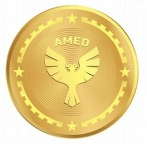

Trade Mark Journal No.2025/032 8 August 2025
WO0000001866006 (9,25,35,36,38,41,42)
Office of origin: Turkey
Date of International Registration:17 February 2025
Date of designation in the UK:
17 February 2025

International priority date claimed: 23 August 2024
(Turkey)
- Class 9
- Magnetic, optical data carriers and computer programs and software recorded thereto; electronic publications downloadable via computer networks and recordable in magnetic and optical media.
- Class 25
- Clothing made from all kinds of material, including underwear and outer clothing, other than special purpose protective clothing, socks, foulards, shawls, bandannas, scarves, belts; footwear: shoes, slippers, sandals; headgear: hats, caps with visors, berets, skull caps, caps.
- Class 35
- Provision of online marketplaces for buyers and sellers; systemization of information into computer databases; auctioneering; the bringing together, for the benefit of others, of a variety of goods, namely, perfume, soap, eau de cologne, hair and body spray, waxes, candles, car air fresheners, key rings of common metals, commemorative statuary cups of common metal, eyeglasses, magnets, decorative magnets, magnetic, optical data carriers and computer programs and software recorded thereto, electronic publications downloadable via computer networks and recordable in magnetic and optical media, necklace, wristband, badges, key rings of precious metals, commemorative statuary cups made of precious metal, jewellery (including imitation jewellery), gold, jewels, precious stones and jewellery made thereof, cuff-links, tie pins, statuettes and figurines of precious metal, key rings of precious metals, clocks, watches and chronometrical instruments (including chronometers and their parts, watch straps), trophies made of precious metal, rosaries, banknotes as souvenirs, bookmarks, covers, balls, pinboard, paintings, pencil cases, pens and pencils, erasers, pencil sharpeners, umbrellas, bags, wallets, boxes and trunks made of leather or stout leather, key cases, luggage, suitcases, non-electric household and kitchen utensils, included in this class, including those made of precious metals (other than forks, knives, spoons), services (dishes), pots and pans, bottle openers, flower pots, drinking straws, plates, coasters, ornaments and decorative goods of glass, porcelain, earthenware or clay, statues, figurines, vases, and trophies made of these materials, flasks, insulating flasks, cups, display boards, frames for pictures and paintings, identity plates, identification bracelets, name plates, identification tags, made of wood or synthetic materials, textile goods for household use, namely, duvet cover sets, bed covers, blanket, coverlets, bathrobe, towels, flags, pennants, labels of textile, jerseys, clothing, including underwear and outerclothing, other than special purpose protective clothing, jumpers (pullovers), shorts, t-shirt, shirt, topcoats, coats, raincoats, waistcoats, zipper tops, tracksuits, tank tops, dresses, skirts, jumpsuits, pyjamas, leggings and similar textile goods, socks, knee high socks, shoes, slippers, sandals, jersey sets, training clothing and similar sports uniforms, mufflers (clothing), shawls, berets, bandanas, gloves, socks, belts, ties, hats, head gear, caps with visors, hair pins, hair buckles, hair bands, decorative articles for the hair, not made of precious metal, carpets, rugs, mats, games and toys, arcade video game machines, game apparatus, machines and devices for use with an external display screen and monitor (including those coin-operated), toys for animals, toys for outdoor playgrounds, parks and game parks, gymnastic and sporting articles included in this class, fishing tackle, artificial fishing bait, decoys for hunting and fishing, artificial Christmas trees and ornaments for Christmas trees, artificial snow, rattles (playthings), novelties for parties and similar entertainments, paper party hats, football trading card series, darts, backgammon games, lighters for smokers, matches, enabling customers to conveniently view and purchase those goods (such services may be provided by means of retail stores, wholesale outlets, by means of electronic media and through mail order catalogues and similar other methods).
- Class 36
- Insurance services; financial and monetary services; real estate brokers, real estate agencies and real estate management; customs brokerage services.
- Class 38
- Radio and television broadcasting services; telecommunication services, internet service provider services; news agencies.
- Class 41
- Education and training; arranging and conducting of symposiums, conferences, congresses and seminars; sporting, cultural activities and entertainment (including ticket reservation and booking services for cultural and entertainment activities such as cinemas, sporting events, theatres, museums and concerts); publication and editing of printed matter, including magazines, books, newspapers, including provision of such services via global communication networks.
- Class 42
- Computer services: computer programming, computer virus protection services, computer system design, creating, maintaining and updating websites for others, computer software design, updating and rental of computer software, providing search engines for the internet, hosting websites, computer hardware consultancy, rental of computer hardware.
DRN BETRIEBS GMBH
Representative: DERİŞ PATENT VE MARKA ACENTALIĞI A.Ş., İnebolu Sokak No:5 , Deriş Patent Binası , Kabataş/Setüstü, TR-34427 İstanbul, TURKEY